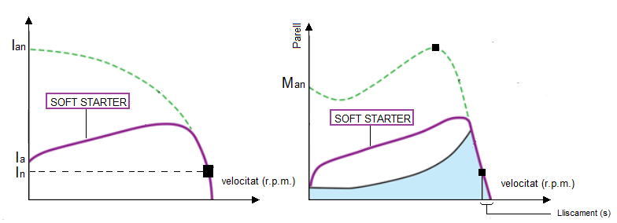
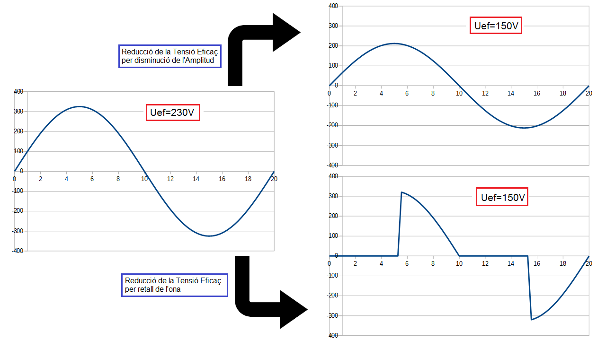
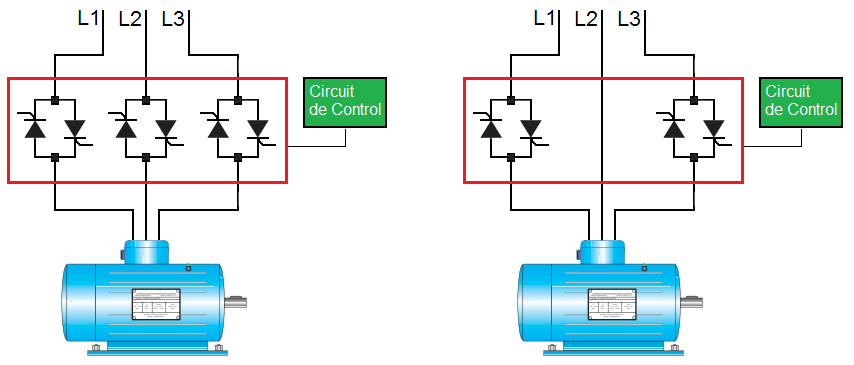
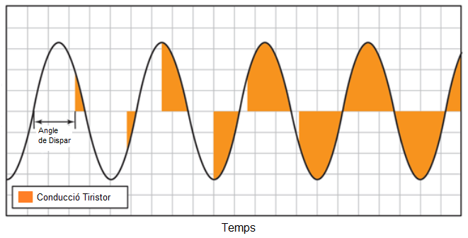
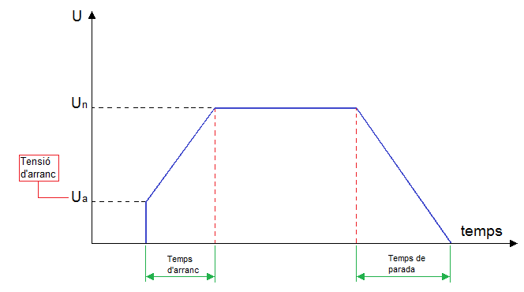

Arrancadors Progressius (Soft Starters)
| Els arrancadors progressius, també anomenats arrancadors suaus o pel seu nom en anglés "SOFT STARTERS", son equips dissenyats per reduir el pic del corrent i el parell en l'arranc d'un motor, mitjançant la utilització de l'electrònica de potència. |
Actualment, son la millor solució per l'arranc de motors. Amb els arrancadors suaus s'aconsegueixen unes corbes d'arranc molt favorables i ajustades a les necessitats, gracies sobretot, a la facilitat amb la que es poden modificar el paràmetres de l'arranc en un SOFT STARTER.

La idea darrere d'un arranc suau és permetre que el corrent del motor s'elevi gradualment fins que el motor aconsegueix el seu estat estacionari (velocitat nominal). Aquest tipus d'arranc també redueix el parell d'arranc, tal com es pot veure en la gràfica anterior.
Els principals camps d'aplicació són els relacionats amb:
- Transport, cintes transportadores. Ens estalviem sacsejades i possibles caigudes del producte transportat en l'arranc i la parada del motor.
- Bombes. S'eviten els cops d'ariet i s'augmenta la vida útil de les canonades.
- Màquines de tall. S'evita l'arranc brusc amb el possible trencament de l'element de tall.
- Màquines amb gran corrent d'arranc, com per eexemple, mescladores i agitadors.
Principi de funcionament
Al igual que en el mètode d'arranc "Estrella-Triangle", els arrancador progressius es basen també en la disminució del valor eficaç de la tensió que alimenta el motor. No obstant això, aquesta reducció de tensió eficaç la realitzen trossejant l'ona sinusoïdal i no disminuint la seva amplitud.

Els arrencadors estan constituïts per tres conjunts de dos tiristors connectats en antiparal·lel en els quals cada un és una fase admás de la part de control dels tiristors. En alguns models, s'eliminen els tiristors d'una fase i d'aquesta manera es simplifica i abarateix el dispositiu

Aquests tiristors, sota les ordres d'un circuit de control, modifiquen l'ona elèctrica de la xarxa d'alimentació. D'aquesta manera es controla el procés d'arranc. Aquest es realitza mitjançant una pujada progressiva de la tensió, el que possibilita una arrencada sense sacsejades i redueix al matix temps la punta de corrent.

Configuració d'un arrancador progressiu
Els models més senzills compten almenys amb els següents paràmetres:
- Tensió d'arrancada (Initial Voltage): És el valor de la tensió que proporciona el arrancador en el primer instant de l'arranc.
- Temps d'arrancada (Start Time): és el temps que dura el procés d'arrencada, des que s'aplica la tensió inicial al motor fins que arriba al valor de la tensió de la xarxa elèctrica
- Temps de parada (Stop Time) és el temps que transcorre des que es dóna l'ordre de stop fins que el motor realment deixa de girar

Llicenciat sota la Llicència Creative Commons Reconeixement CompartirIgual 4.0